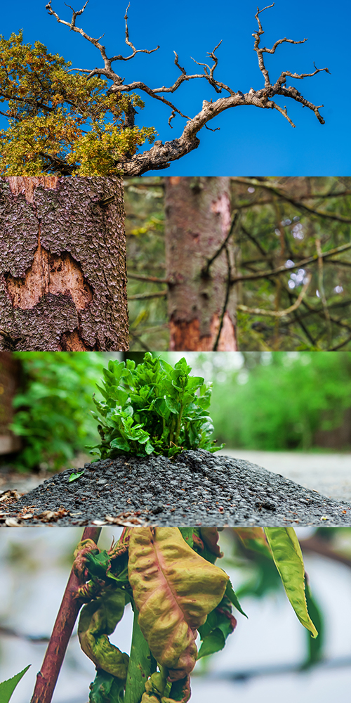

Tree Service in West Creek: Signs Homeowners Shouldn’t Ignore
Most homeowners don’t think much about their trees until something dramatic happens. A loud crack during a storm. A branch blocking the driveway. A tree that suddenly looks different than it did last summer. The truth is, tree problems rarely happen overnight. They build slowly, often giving subtle warning signs long before there’s a real emergency. Living in West Creek adds another layer to the equation. Between coastal winds, sandy soil, and heavy seasonal storms, trees here deal with stress that many inland properties never see. That’s why tree service in West Creek is often less about reacting to damage and more about being proactive and catching small issues before they become expensive ones. If something in your yard looks a little “off,” it might be worth paying attention.
The Lean That Wasn’t There Last Year
One of the most common red flags is a tree that starts to lean. Not every leaning tree is dangerous, but if you notice a change from one year to the next, it deserves attention. Sandy soil, which is common in West Creek, does not always anchor roots as firmly as dense clay soil. Add in strong wind gusts from coastal storms, and root systems can slowly shift. Additionally, if the ground around the base looks cracked or lifted, that can be a sign the roots are struggling to hold. A gradual lean may not seem urgent, but over time it increases the chance of failure during heavy rain or wind.

Dead Branches High in the Canopy
Dead branches at the top of a tree are easy to ignore because they are out of reach and often out of sight. But those upper limbs are usually the most exposed to wind, salt air, and harsh weather. Over time, they weaken and dry out. When a large branch falls from height, it can cause serious damage. You might notice brittle limbs, missing bark, or branches that never leaf out in spring. These are early signals that professional trimming may be needed. Tree service in West Creek often involves removing hazardous limbs before they come down on their own.
Cracks, Cavities, and Soft Spots
A healthy tree trunk should feel solid. If you see vertical cracks, peeling bark, hollow areas, or even mushrooms growing near the base, those can be signs of internal decay. Decay weakens a tree from the inside out, which makes it unpredictable.
Sometimes a tree can look perfectly healthy from a distance while the core is compromised. Tapping on a suspicious area and hearing a hollow sound is not a good sign. When structural integrity is in question, it is always safer to have a professional assessment rather than waiting to see what happens.
Roots Lifting Driveways or Sidewalks
Roots do more than anchor a tree. They search for moisture and nutrients, and in sandy coastal soil they often grow close to the surface. If you start noticing driveway sections lifting, sidewalks cracking, or patios shifting, tree roots may be involved.
This does not always mean removal is necessary, but it does mean the tree should be evaluated. Roots that are exposed or damaged can also weaken stability. Addressing the issue early can protect both your property and the tree itself.
Leaves That Look Different This Season
Trees communicate stress through their leaves. Thinning foliage, unusual discoloration, smaller leaves than normal, or bare patches in the canopy can all point to a problem. In West Creek, trees deal with salt exposure, fluctuating moisture levels, and pest activity that all affect overall health.
Pine and oak trees, which are common throughout the area, can show subtle symptoms before more obvious decline sets in. Catching these changes early allows for corrective pruning or treatment rather than waiting until removal becomes the only option.
Storm Season Is Not the Time to Guess
When heavy rain and strong winds roll through Ocean County, weak trees reveal themselves quickly. The safest time to address concerns is before the next storm hits. If you already have a tree that leans, sheds branches, or shows visible damage, waiting can increase the risk to your home, vehicles, and neighbors.
Tree service in West Creek is not just about cutting down trees. It is about understanding how local conditions affect tree stability and health. Preventative trimming, structural pruning, and professional evaluations all play a role in reducing storm related damage.
A Simple Rule for Homeowners
When a tree looks noticeably different than it did last year, it is your cue to investigate. Trees do not change dramatically without a reason. Paying attention to early warning signs can prevent costly repairs later. The trouble is, most tree issues develop quietly. They start with a slight lean, a thinning canopy, or a few dead branches at the top. Over time, those small signals grow into bigger risks. Having an experienced eye take a look can provide peace of mind and help you make informed decisions about your property.
Your trees add beauty, shade, and character to your yard. With the right care, they can stay healthy for decades. And when something does not look quite right, addressing it early is always the smarter move. Contact Ben Bivins Tree Experts for all of your tree service in West Creek needs!